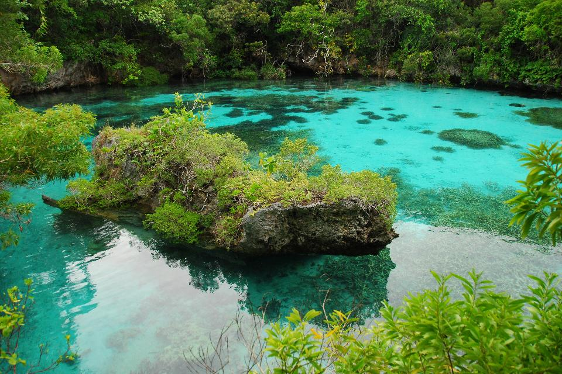
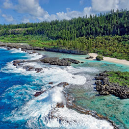
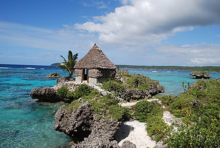

Maré ,Nengoné dans la langue kanak nengone est la deuxième île et commune des îles Loyauté de laNouvelle-Calédonie pour ce qui est de la superficie et de la population, venant juste après Lifou. La commune fait partie de l'aire coutumière Nengone comprenant huit districts et vingt-neuf tribus.
Ainsi, à trois kilomètres de Tadine environ, une piste s'engage sous le sous-bois et permet d'accéder à une sorte de piscine taillée dans le corail, nommée l'aquarium naturel, aux eaux parfaitement limpides.
L'accès au site nécessite une marche d'approche d'environ 2 heures et demi (et il ne s'agit que de l'aller…). La balade, bien qu'un peu sportive (gare aux coraux très coupants !), offre de magnifiques points de vue sur les plateaux coralliens et les falaises de l'île.
Pour les amateurs, plusieurs cases où passer la nuit, notamment celle-ci construite sur un petit îlot entouré par l’océan. Pour amateurs de promiscuité authentique, uniquement.
